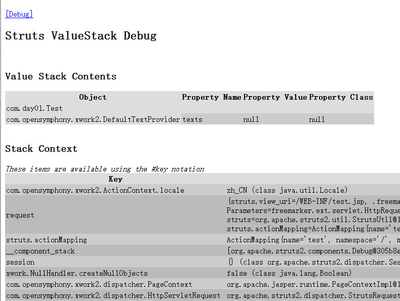
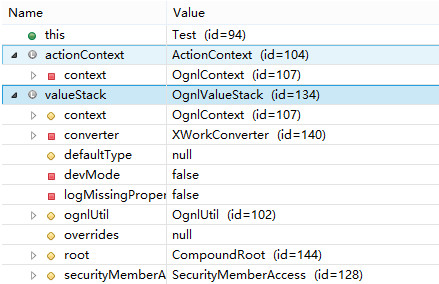
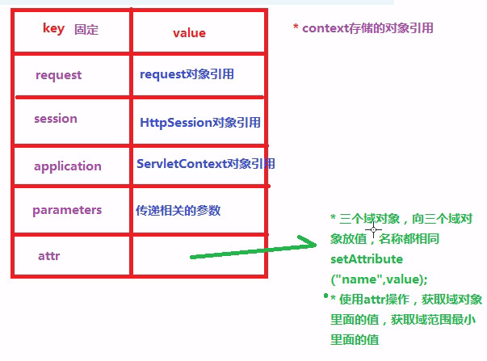

struts2标签
使用需要在jsp中引入标签库<%@ taglib uri="/struts-tags" prefix="s"%>
OGNL概述
-
类似于在jsp中的el表达式，el表达式在jsp中获取域对象里面的值。同样OGNL也是一种表达式，不过这个功能更加强大
-
OGNL不是Struts的一部分，它是一个单独的项目，经常和Struts的标签搭配使用操作值栈。所以使用时先要导入jar包
-
使用方法
<s:property value="ognl表达式"/>,比如结合struts2标签计算字符串长度<s:property value="'haha'.length()"/> -
Struts2默认的表达式语言就是OGNL
支持对象方法的调用,格式objName.f()
支持静态方法和值的访问，格式
@[类全名(包括包路径)]@[方法名|值名]，例如：@java.lang.String@format('foo %s','bar')支持赋值操作和表达式串联
访问OGNL上下文(OGNL Context) Action Context
操作集合对象
#和%的使用
使用#来获取context里面的数据
HttpServletRequest request = ServletActionContext.getRequest();
request.setAttribute("name", "haha");
//页面中
<s:property value="#request.name"/>
%的使用主要用于struts2标签中的表单标签，如果直接在struts2表单标签里面使用ognl表达式 不识别，只有使用%号后才会识别
<input type="text" value="${name}">
<!-- 在struts2的标签中获得request域的值 -->
<!-- 无法识别 -->
<s:textfield name="name" value="#request.name"></s:textfield>
<!-- 可以识别 -->
<s:textfield name="name" value="%{#request.name}"></s:textfield>
值栈
struts2 里面提供本身一种存储机制，类似于域对象
概念
以前是把数据放到域对象里面，然后再在jsp中取出。在Struts中既可以把数据放到域对象（Action）也可以放到值栈里面
在action里面把数据放到值栈，再在页面中取出
获取值栈对象
位置:action每次访问都是一个新的对象，每个action对象中都存在一个值栈对象。 因此无论在一个action获得多少次值栈对象，都是一样的
获取值栈对象有多种方法
-
通过ActionContext
ActionContext actionContext = ActionContext.getContext(); ValueStack valueStack = actionContext.getValueStack();内部结构
可以在页面中通过<s:debug></s:debug>来查看当前值栈的内部结构，如下图所示
从图中可以看出在action中没有做任何操作时，栈顶元素是action的引用

值栈最重要的分为两部分

-
第一部分root，结构是list集合，一般都是操作root里面的数据
class CompoundRoot extends ArrayList -
第二部分context，结构是map集合
class OgnlContext extends Object implements Map
向值栈存放数据
方法有多种
-
获取值栈对象，用值栈的set方法,结果会向栈顶放入java.util.HashMap对象
ActionContext actionContext = ActionContext.getContext(); ValueStack valueStack = actionContext.getValueStack(); valueStack.set("name", "haha"); -
获取值栈对象，用值栈的push方法,结果会向栈顶放入java.lang.String对象
valueStack.push("123"); -
在action定义变量，生成变量的get方法(主要使用),结果会在本action的引用中找到该值，不会向栈中新加数据
private String name; public String getName() { return name; } @Override public String execute() throws Exception { name = "haha"; return Action.SUCCESS; }
从值栈获取数据
-
使用struts2的标签+ognl表达式获取值栈数据
<s:property value="ognl表达式"/>获得字符串
<s:property value="变量名"/>获得对象
<s:property value="对象名.属性名"/>获得list集合
<!-- 方式1 --> `<s:property value="list[0]"/>` `<s:property value="list[0].name"/>` <!-- 方式2 常用--> <s:iterator value="list"> <s:property value="name"/> </s:iterator> <!-- 方式3 和jstl很像，遍历值栈list集合，得到每个user对象， 加快速度的机制，放到context里面，从context里面获得数据yao加#--> <s:iterator value="list" var="user"> <s:property value="#user.name"/> </s:iterator>-
获得set方法放入的值
<s:property value="mapkey"/> -
获得push方法放入的值
这个比较复杂，因为它没有key， 如果在action最后做操作
valueStack.push("1");valueStack.push("2");， 那么栈顶是2，1,可以通过从栈的指定位置读出来<s:property value="[0].top"/> <s:property value="[1].top"/> -
使用jstl+el表达式获取值栈中的数据
<%@ page language="java" %> <%@ page contentType="text/html; charset=UTF-8" %> <%@ page pageEncoding="UTF-8"%> <%@ taglib uri="/struts-tags" prefix="s"%> <%@ taglib uri="http://java.sun.com/jsp/jstl/core" prefix="c"%> <!DOCTYPE html> <html> <head> <meta http-equiv="Content-Type" content="text/html; charset=UTF-8"> <title>Test</title> </head> <body> <s:debug></s:debug> <!-- 使用struts2标签+ognl--> <s:iterator value="list" var="value"> <s:property value="#value"/> </s:iterator> <!-- 使用jstl+el表达式--><br/> <c:forEach items="${list}" var="v"> ${v} </c:forEach> </body> </html>为什么el表达式能够获得数据
原因是struts2从底层增强request对象里面的方法getAttribute， 首先从request域获取值，如果获取到直接返回，获取不到则到值栈中把值获取出来，把值放到域对象里
public Object getAttribute(String key) { if (key == null) { throw new NullPointerException("You must specify a key value"); } if (disableRequestAttributeValueStackLookup || key.startsWith("javax.servlet")) { // don't bother with the standard javax.servlet attributes, we can short-circuit this // see WW-953 and the forums post linked in that issue for more info return super.getAttribute(key); } ActionContext ctx = ActionContext.getContext(); Object attribute = super.getAttribute(key); if (ctx != null && attribute == null) { boolean alreadyIn = isTrue((Boolean) ctx.get(REQUEST_WRAPPER_GET_ATTRIBUTE)); // note: we don't let # come through or else a request for // #attr.foo or #request.foo could cause an endless loop if (!alreadyIn && !key.contains("#")) { try { // If not found, then try the ValueStack ctx.put(REQUEST_WRAPPER_GET_ATTRIBUTE, Boolean.TRUE); ValueStack stack = ctx.getValueStack(); if (stack != null) { attribute = stack.findValue(key); } } finally { ctx.put(REQUEST_WRAPPER_GET_ATTRIBUTE, Boolean.FALSE); } } } return attribute; }
-